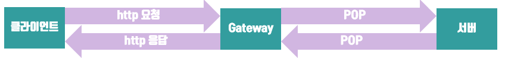

위 그림에서처럼 동작하며 클라이언트 입장에서 proxy는 서버처럼 동작하면서 클라이언트의 요청을 처리하고 응답을 내어준다. 반대로 서버의 입장에서 프록시는 클라이언트처럼 동작하면서 요쳥을 보내고 서버는 이에 대한 응답을 프록시에게 보내준다.
엄밀하게 말하면, 프록시는 같은 프로토콜을 사용하는 둘 이상의 애플리케이션을 연결한다. 이 점이 프록시와 게이트웨의 차이점이라고 할 수 있으나, 약간 모호하다. 그 이유는 프록시는 때때로 약간의 프로토콜 변환을 하기도 하기 때문이다. (상용 프록시 서버는 SSL 보안 프로토콜, SOCKS 방화벽, FTP 접근, 웹 기반 애플리케이션을 지원하기 위해 게이트웨이의 기능을 구현하기도 한다.)
프록시에는 공용 프록시와 개인 프록시가 있으며 대부분의 프록시는 공용 프록시이다.
프록시의 사용 예시
어린이 필터 - 성인 콘텐츠의 차단 역할을 하는 프록시
문서 접근 제어자 - 권한 등을 피해가는 것을 막기 위해 서버 측에서는 프록시로부터의 요청만 받아들이는 등의 설정을 통해 접근을 제어할 수 있다.
보안 방화벽 - 보안을 강화하기 위해 프록시 서버를 사용할 수도 있다.
웹 캐시 - 인기 있는 문서의 로컬 사본을 관리하고 해당 문서에 대한 요청이 오면 빠르게 제공할 수 있다.
대리 프록시 - 공용 콘텐츠에 대한 느린 웹 서버의 성능을 개선하기 위해 사용될 수 있다. (흔히 서버 가속기 라고 불린다.) 또한 콘텐츠 라우팅 기능과 결합되어 주문형 복제 콘텐츠의 분산 네트워크를 만들기 위해 사용될 수 있다.
콘텐츠 라우터 - 인터넷 트래픽 조건과 콘텐츠의 종류에 따라 요청을 특정웹 서버로 유도하는 콘텐츠 라우터로 동작 할 수 있다.
트렌스코더 - 콘텐츠를 클라이언트에게 전달하기 전에 본문 포멧을 수정하는 것을 말한다. 이와 같이 데이터의 표현 방식을 자연스럽게 변환하는 것을 트랜스 코딩이라고 한다.(GIF를 JPG로 변환, 이미지 크기 축소, 텍스트 압축 등)
익명화 프록시 - HTTP 메시지에서 신원을 식별할 수 있는 특성들(클라이언트 IP주소, 쿠키 URI 세션 아이디 등)을 제거함으로써 개인 정보 보호와 익명성 보장에 기여한다.
게이트웨이(Gateway)
게이트웨이는 프록시와의 역할은 같지만 서로 다른 프로토콜을 사용하는 둘 이상을 연결한단는 점이 다르다.

게이트웨이의 이름은 (클라이언트 프로토콜)/(서버 프토토콜) 로 표현한다.
게이트웨이가 HTTP 클라이언트와 NNTP 뉴스 서버 사이에 있으면 HTTP/NNTP 게이트웨이가 된다.
게이트웨이의 가장 일반적인 형태인 어플리케이션 서버는 목적지 서버와 게이트웨이를 한 개의 서버로 결합하는 형태이다.
CGI(Common Gateway Interface) - 서버와 외부 스크립트 또는 프로그램과 상호작용 할 때 이루어지는 입출력을 정의한 표준이며, 이 표준에 맞추어 만들어진 것이 CGI 스크립트 또는 CGI 프로그램이다.